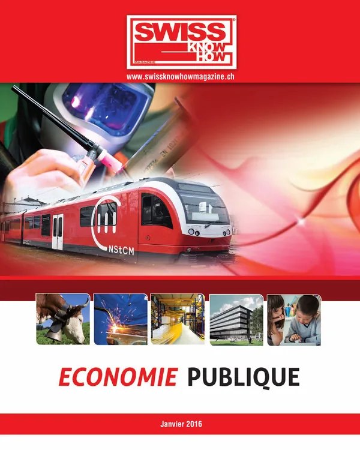

Texte intégral
En 2014 MBC SA a transporté 5 millions de voyageurs dont 623 000 écoliers (en augmentation de 7,5 % par rapport à 2013). Son réseau de bus, avec ses 209 arrêts desservis et ses 150 km de longueur, a enregistré 2,5 millions de km effectués (+22 %). Et son activité de fret est tout aussi dynamique : ses 22 gares et haltes desservies sur 30 km de long lui ont permis de transporter 42 000 t de marchandises (+6,4 %). Retour sur un réseau gagnant.
Les MBC relient 52 localités de l’agglomération morgienne et emploient 210 collaborateurs. Une vitalité qui leur a permis de réaliser un chiffre d’affaires de 33 millions de CHF en 2014. La raison de ce succès ? Une offre dense et un réseau adapté aux attentes et aux besoins des habitants de la région. En 2014, en plus des lignes existantes, le réseau de bus s’est enrichi des 6 lignes du Pieds du Jura. Avec ses 4 lignes urbaines desservant Morges et le littoral lémanique et ses 9 lignes régionales c’est un vaste territoire compris entre les Hauts de Morges et le Pied du Jura qui est irrigué par les MBC. La Vallée de Joux étant également desservie l’été pour promouvoir le tourisme régional. Cerise sur le gâteau, le réseau de bus des MBC est relié au réseau CFF par les gares de Morges, Cossonay, La Sarraz et Bussigny.
Soucieux de coller au plus près des besoins des voyageurs, les MBC proposent également des prestations nocturnes : le Pyjam’bus. Composé de 2 circuits desservis à la demande à l’est et à l’ouest de la région, il est actif le vendredi et le samedi jusqu’à 2 heures du matin pour les jeunes… et les moins jeunes ! Les MBC ont aussi pensé aux voyageurs qui se décident à la dernière seconde : ils ont la possibilité de prendre un billet par SMS.
Pour sa part, le réseau ferroviaire des MBC fête cette année ses 120 ans d’existence. Il se compose de deux lignes : Morges-Apples-Bière et ApplesL’Isle. Deux opportunités de conjuguer avec bonheur les besoins des voyageurs avec ceux des producteurs locaux. C’est le pari de l’Association « BAM, la Voie des Sens », ainsi que des produits touristiques BAM Saveurs et BAM Terroir. « La Voie des Sens » réunit des vignerons, des artisans et des restaurateurs autour de la voie BAM (Bière-Apples-Morges). Elle sert de trait d’union pour les touristes désireux de visiter les productions locales et de rencontrer les artisans du cru. De son côté, BAM Saveurs utilise la ligne historique entre Morges, Apples et L’Isle entre 10 et 12 fois par an. Une manière forte plaisante de découvrir la région et de goûter à la cuisine locale. BAM Saveurs peut même être loué pour des anniversaires et autres moments festifs.
Enfin, BAM Terroir offre aux voyageurs une véritable escapade gourmande. Un voyage en train régulier de Morges à Apples pour une visite du Moulin de Sévery, huilerie artisanale construite en 1845. La démonstration de fabrication d’huile pressée à l’ancienne est suivie d’un apéritif et de la dégustation d’un menu « terroir » du Chef Claude Joseph à l’Auberge de la Couronne d’Apples. À travers ces 3 formules résolument goûteuses, les MBC veulent renforcer ce créneau touristique pour faire valoir fromageries, Maison du Livre, vins de Morges, restaurateurs… sans oublier les nombreuses manifestations autour des voies ferroviaires. Les MBC regorgent d’idées pour proposer des animations dans les trains en relation avec les productions locales : dégustation de vins, balades-dégustations avec différents acteurs touristiques… Une manière habile et utile de renforcer leur rôle ferroviaire dans la région.
Les MBC ont également à cœur de développer les transports spéciaux, autrement dit scolaires. Ils desservent ainsi 5 établissements scolaires de la région d’Apples-Bière, Morges, Préverenges, St-Prex et environs, Chigny, Echichens et Saint-Sulpice. Au total, ce sont 3 500 élèves qui sont transportés chaque jour. Des voyageurs pas tout à fait comme les autres que les MBC aiment accompagner.
Forts de ces perspectives, les MBC recherchent l’adaptation continue de leur offre et projettent même, à moyen terme, de réorganiser leur réseau pour le faire coller encore mieux aux besoins de leurs clients. Par ailleurs, les MBC se préparent déjà au prochain changement horaire du 15 décembre 2015 avec une cadence à la demi-heure de 6 heures du matin à 20 heures du soir pour le réseau ferroviaire – une amélioration d’autant plus notable qu’elle sera accompagnée par l’introduction du nouveau matériel roulant équipé d’un système d’information voyageurs performant. Mais les MBC ne comptent pas en rester là : ils se projettent déjà en 2020-2030 avec l’étude du passage de la cadence au quart d’heure. Une révolution qui impliquera de réaliser des travaux d’infrastructures pour cette ligne ferroviaire qui a de l’avenir… à condition de trouver suffisamment de places de parking et d’échange dans les différentes haltes du réseau.
Le matériel ferroviaire pour le transport de marchandises n’est pas oublié. Aux 2 locomotives et aux wagons vient s’ajouter une particularité : 48 paires de boggies transporteurs sur voie métrique pour le matériel des CFF à écartement normal. Grâce à ce matériel parfaitement adapté, les MBC assurent un trafic de marchandises quotidien à grande échelle. Et ne comptent pas en rester là puisque les tractations avec Léman Granulats SA pour l’exploitation des gravières du pied du Jura ont aboutis. Cela permettra à MBC de tirer le meilleur parti du plan directeur des gravières qui exige le transport par train d’une grande partie des graviers. Dès 2016 les MBC tablent sur 171 000 t supplémentaires de graviers à transporter par année. Avec, à long terme, un potentiel de 500 000 à 600 000 t de graviers. Le transport de bois, de betterave (en pleine expansion) et de céréales constitue d’autres pistes intéressantes même si elles restent tributaires du marché et de la PAC. Quoi qu’il en soit, les MBC veillent toujours à proposer les meilleures solutions possibles pour le fret ferroviaire.
Si la richesse de l’offre de transport est vitale pour les MBC, la qualité du matériel l’est tout autant. En l’espèce, les 71 bus d’une moyenne d’âge de 5 ans attestent d’un parc récent, très performant du point de vue écologique. À moyen terme, les MBC étudient l’acquisition de bus hybrides. Le même souci de qualité se retrouve dans le matériel ferroviaire des MBC. L’été 2015 verra le remplacement du matériel ancien par 4 rames automotrices de dernière génération. Avec, en ligne de mire, une flotte moderne, performante, climatisée et confortable dès janvier 2016.
L’offre de transports des MBC serait incomplète si l’on omettait le funiculaire Cossonay-Penthalaz à Cossonay-Ville. Remis en service en 2014, il s’affiche d’ores et déjà comme une véritable success-story populaire et pourrait très vite attirer plus de 300 000 voyageurs par an. Les MBC réfléchissent donc à la meilleure manière d’accroître sa capacité. Trois options complémentaires sont à l’étude : l’accélération des cadences aux heures de pointe, l’augmentation de la capacité des cabines et l’accroissement de la vitesse. Ce faisant, les MBC anticipent la demande croissante pour le funiculaire attendue d’ici 2021, lorsque le cadencement de la ligne Cossonay-Lausanne passera au quart d’heure.
Texte paru dans Swiss Knowhow – Économie publique (Vaud) 2016, p. 39-41, tel que publié dans l'édition imprimée. En cas d'écart, la version imprimée fait foi.

Paru dans
Swiss Knowhow – Économie publique (Vaud) 2016
2016 · page 39-41 · article original en français
Signaler une erreur Lire l'article complet PDF